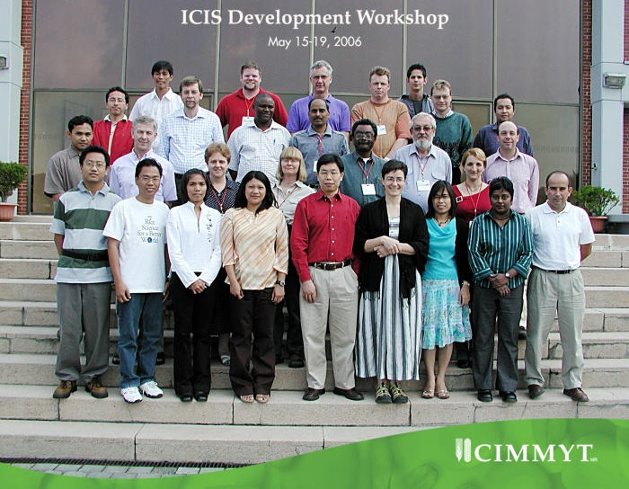

ICIS Workshop 2006
From ICISWiki
Back to Main Page > Workshops and Meetings
Agenda 1: Activity Reports of ICIS Partners
- CIMMYT (Guy Davenport)
- presentation (pdf)
- comments/discussion:
- Guy stressed the CIMMYT mandate to adopt ICIS for its data management. Furthermore, ICIS will also benefit from some of the applications being developed in CIMMYT like WINS, MaizeFinder, Maize Fieldbook, Comparative Map Viewer and genotype template. The alliance between IRRI and CIMMYT was a major event that happened which will have a great impact in ICIS development.
- NUNHEMS (Casper aan den Boom)
- presentation (pdf)
- comments/discussion:
- Casper discussed how the ICIS Organization for Europe, USA and Asia was established. An ICIS Workshop was held in Nunza last Febraury, 2005. Testing of ICIS 5 was started and migration to ICIS 5.3 is on the way. There are also activities to integrate ICIS with NunGems.
- Arllet asked Casper if the queries they used to migrate to version 5 is based on the set of queries that go with ICIS 5 release. Casper said that it was based there but there were modifications in the queries to make it work in Oracle.
- ICARDA (Akin Akintunde)
- presentation (pdf)
- comments/discussion:
- Akin showed the different crops being developed in ICARDA and the type of data from those crops that were already in ICIS. It was asked why Faba Beans and Legumes are not yet in ICIS. Akin explained that time and priority of activities were some factors that affect the implementation of ICIS in ICARDA.
- A training was held in ICARDA years ago and Arllet asked the status of the users who attended it and the usefulness of that training to the users. Akin answered that there are around 2 breeders who are using it already
- UQ (Sandra Micallef)
- presentation (pdf)
- comments/discussion:
- Sandra discussed the GWIS central database administration and the distribution of wheat database to other institutions. Some of the activities done in UQ are the development web interface for GWIS, update of 1500 Australian wheat pedigrees, upload of durum and bread wheat database from Canada. There are also projects being done in collaboration with CAGE and GENICA. Sandra mentioned also that several institutions in Australia are already using ICIS for research like CSIRO, Leslie Research Lab and Univ. of Sydney among others.
- Akin asked if the institutions mentioned are using ICIS as an institute. Sandra clarified that ICIS is not used as institute-software but rather a division or project of that institution adopted ICIS.
- Arllet asked Sandra if Perl is still the one being used for GWIS web page. Sandra answered that it is the Java web interface but she admitted that there were some difficulties installing it. Hence, the IT personnel of UQ assisted her in the installation.
- CIP (Edwin Rojas)
- presentation (pdf)
- comments/discussion:
- Edwin discussed the workflow activities for Information Research Unit of CIP and the different information systems developed and being developed in the institute. Some of ICIS tables were used for database management. SetGen and GMSSearch were some of the ICIS standalone applications that CIP might adopt.
- Edwin explained the use of health status in the barcode on CIP accessions as Arllet asked about it. Some of the in-vitro samples have bacteria in it, hence there is a need to differentiate the ones with no bacteria and those with have.
- AAFC (Fran Clarke)
- AAFC presentation (pdf) SPARC Data Comparison Tool presentation (pdf)
- comments/discussion:
- Fran discussed the rationale behind the development of Data Comparison Tool which is the need of AAFC breeders. But it is expanded now and made more generic. The usefulness of the Workbook template was also stressed. For GMS information, it is constantly being updated and corrected. A protocol for separating local (private) and central (public) data was worked out too. AAFC evaluated ICARDA’s LIMS/GEMS for adoption and improvement were identified. Fran clarified that they used the old version for evaluation hence some of the mentioned improvements might have been implemented already. They are looking at possibility of storing Molecular Variant Data in DMS and it is open to discussion. Fran specified also some of their needs which they hope to be implemented in ICIS. Some of them are restricting users access to specific studies in the DMS and certain pedigree info in the GMS, continued refining of queries to meet AAFC and ICIS community needs and alpha/numeric choice for identification of filial generations.
- Akin commented that storage management system is now incorporated in the new ICARDA LIMS/GEMS system but the melting temperature field will have to be discussed with Shawn Yates. Also he mentioned his apprehension in storing the molecular variant data in DMS because of speed. He suggested that tables from the GEMS must be incorporated in the DMS to make it work or it will not work at all
- University of Agricultural Sciences Bangalore (H.E. Shashidhar)
- presentation (pdf)
- Shashi informed the ICIS group that there are of 18900 lines of sorghum already in GMS. Also, multiple names for lines are being input and more data will be input over the next six months.
- comments/discussion:
- Conflict of nomenclature between sorghum and soybean databases to be resolved.
- IITA (Elkanah Oyetunji)
- presentation (pdf)
- comments/discussion:
- Elkanah specified the crops already implemented in ICIS which are cowpea, soybean, banana and yam. Updates are regularly done in those databases. Cassava and maize are the crops being implemented at present. For cassava, 1983 – 1992 GMS data are already uploaded.
- Graham questioned about the use of ICIS Stand Alone Applications like Setgen and Workbook in loading the data in SQL Server, the database used for the web page application Elkanah mentioned. Graham explained the problem in using SQL server for ICIS standalone applications in relation to ODBC. Elkanah clarified that data are directly stored in Access and the Access database is converted to SQL server which is the database used for the web.
- IRRI (Arllet Portugal)
- presentation (pdf)
- comments/discussion:
- Arllet specified the different ICIS applications that are modified and the people who would discuss them in details on later session of the Workshop. GRIMS was mentioned as major activity in IRRI with extensive work being done in barcoding the different stocks of accession in the Genebank. It was mentioned that cropforge is now heavily used for releases, bug reports and feature requests. Cropwiki is also extensively used, although there are still documents in the technical documentation manual, which need to be converted to wiki tags. Collaborative work with different institutions like Nunza, CIMMYT and MARDI were also mentioned. Trainings were added as other activities in IRRI. One was held last year in IRRI with rice breeders and just a week ago, another training was held which was the first of its kind as it was participated by maize, wheat, sorghum, potato breeders/users sessions.
- Wrap-up of Agenda 1
- comments/discussion:
- Graham mentioned the other partners which are not present but still actively involved in ICIS development like CIAT, GBA and Bayer.
- Fran’s request for restrictive access was laid as topic for discussion. But right now, DMS study does not have field to store ownership/user, which can be the basis for restrictive access to it. Several suggestions were mentioned to implement security or restrictive access to data. Thomas suggested to create views for the tables. But Shawn was asked how do they want the security be implemented. Is it by germplasm record? But how about the parents and derivatives of it which might be developed by other users? Also, which tables need to be hidden or accessed to narrow down access control?
- Initial solution is to add a new column that will indicate their permission. Edwin shared their experience in CIP where users were associated with one user name who have access to particular application or data.. Hence, grouping of users are one way to implement restrictive access to the system rather than individual restriction.
Agenda 2: Improvements of existing ICIS Modules
- SetGen 5.3 (Casper aan den Boom)
- presentation (pdf)
- SetGen
- folder structure for organizing lists is now stable.
- In Edit Window
- now SetGen list headings can have logical names based on the content of the column.
- virtual columns are now called “extra” columns. The extra columns, their headings and content are stored when the list is closed and saved and will be retrieved when the list is re-opened.
- any list can be saved with any combination of extra columns.
- it is possible to sort a section of a list, by “tagging” groups of rows to sort. Convenient to use when different sections of a list have different purposes.
- can add a text line using File > Insert Text Line and typing text into Preferred Name column. Text entry record is given GID=0. If Source column is “filled with sequence” then source column value in the text entry record is given same value as in the line above, but with any suffix.
- In Browse Window
- Extra options available in “Add New List Entry” – including adding a text field
- [-] Button
- layout adjusted to be more consistent
- the new lot number for the new derivative(s) can now be stored in the Source column.
- [B-], [B+] &[Bx] Buttons
- layout here is adjusted to make the Constant and Variable sides of the window more similar
- preview shown before data saved now.
- germplasm generated in error can now be deleted in a group by the use of an “OK to All” button – previously germplasm had to be deleted one by one.
- Import List
- possible now to make a new list by importing an Excel file. Import function checks for valid GIDs.
- Help File
- adjusting the .ini file allows the use of a customized help file located at the specified path
- Search GMS
- there is an additional section in the bottom left corner that displays Generation History. Right clicking on a germplasm entry here allows a view of the characteristics for that germplasm.
- SetGen Needs
- undo button still being requested
- requests for option to display DMS data in lists
- request for a list of abbreviations and acronyms and their associated meanings
- request for the option to define a “standard” SetGen list with default “extra columns”
- InTrack 5.3 (Lilybeth Sison)
- presentation (pdf)
- InTrack 5.3
- includes fields for adding details about person requesting inventory data, and also location
- reports are now opened in MS Word and can be edited
- several default (“system”) reports available
- possible to add user defined parameters to some reports (eg: user defined minimums, etc)
- can access InTrack data from GMS Search
- possible to open list in SetGen Edit window and tag records for which inventory data can be retrieved.
- InTrack Needs
- -desire to see attributes of a seed lot in InTracker
- -seed size characteristics needed to help in deciding quantity of seed to request (currently this data is available in DMS)
- Browse 5.2 (Graham McLaren)
- Browse 5.2
- progress made on the calculation of the coefficient of parentage
- three different display forms for COP data (matrix, inverse matrix, list)
- still a command line driven module, and difficult to move to Windows environment due to complexity of COP calculations
- Browse Needs
- a better algorithim for calculating COP
- perhaps buttons in SetGen for activating Browse functions in the background
- GMS Input 5.3 (William Eusebio)
- presentation (pdf)
- GMS Input 5.3
- tool for batch processing and downloading into ICIS tables, historical crosses, new is possibility to use the tool also for Maize
- parses pedigrees based on location of “/” and assigns new GID to each piece that isn’t found already in the ICIS databases.
- best results obtained when parsing pedigrees with standardized naming conventions
- process for parsing corn pedigrees not stable yet, naming convention different from wheat
- if parsing doesn’t work due to non-uniform pedigree naming, previous generations are loaded with unknown parents
- GMS Input Needs
- additional validation at stage where existing germplasm is offered as a possible match for a parsed segment of the original pedigree, based on comparing dates for existing germplasm with new germplasm
- WorkBook 5.3 (Warren Constantino)
- Topic: Workbook 5.3
- changes made to interface and performance
- customizing is possible by editing .ini file (change logo, point to custom help file, change “Objective” in Description Sheet to “Project Code”, can lock db to prevent error occurring in multi-user environments)
- additional option of using toolbar buttons instead of drop down menus
- retrieving SetGen list into workbook fills description sheet and observation sheet automatically
- toolbar shortcut for inserting lines in description sheet
- additional assistance for adding Property, Scale, Method info for Variables etc – existing options displayed
- entering data into Obs.Sheet using barcode reader is possible
- additional validation possible, and “invalid” values on Obs.Sheet are highlighted
- link to MapMaker (Maize Fieldbook)available
- Retriever 5.3 (Arllet Portugal / Casper aan den Boom)
- Retriever 5.3 IRRI (Arllet)
- presentation (pdf)
- dramatic improvements in performance since method for accessing db changed, SQL queries vs using icis32.dll
- much easier query possibilities using new forms
- Retriever 5.3 Nunhems (Casper)
- presentation (pdf)
- new linked views with fields from multiple tables combined in one makes querying easier and faster
- linked views can be customized by crop depending on needs
- Nunhems RTV contains several “default” reports
- Extra indexing of Oracle tables will improve performance even more
- Data Comparison (Shawn Yates)
- presentation (pdf)
- Data Comparison
- tool allows breeders to see data without need for familiarity with ICIS
- possible to compare studies where hybrid parents occur in both
- additional flexibility available by making adjustments to .ini file (adjusting column header for Designation column, choosing three fields to filter on)
- results displayed side by side in Excel sheet for each trait (property) – easy to read
- default report gives comparison of chosen lines with the checks in same study
- study retriever allows selection of traits to display for selected study, or location
- tool is written in Excel-VBA, will move to VB.net to allow web interface
- plans to update tool so integration with other ICIS databases is possible
- plans to include molecular data
- plans to compare lists of parents, not just a single pair
- request to allow comparison of selected line with lines other than checks
- Help Facilities and Training Materials for ICIS Modules (Archie Roland Llorca)
http://wiki.openttd.org/images/1/12/Megaphon.png
Note
CHM files can harbor viruses (these don't, of course) and so Microsoft decided to impose new rules on .CHM files in their latest Service Pack 2 (SP2) for Windows XP. If you are running a version of Windows older than Windows XP SP2 you can ignore the rest of this paragraph: the .CHM files will display for you without problems. But if you are running Windows XP SP2 then it is important that you elect to Save the .CHM file to your hard drive rather than Opening it directly from here. This is important because once the .CHM file is on your computer you need to right-click on its filename and then select Properties. At the bottom of the Properties page you may notice a Security warning that says "This file came from another computer and might be blocked to help protect this computer". Click on the Unblock button and you will then be able to read the complete textbook. You will know that Windows XP SP2 is blocking the .CHM file if when you try to view it every page has been replaced with the message "The page you are looking for is currently unavailable". Note that this extra step is necessary for all .CHM files, even those that arrive inside .ZIP files.
- Help Facilities and Training Materials for ICIS Modules
- proposing application that provides same help screen format as all Windows apps (CHM)
- content can be created in-house, will handle text, image and video files
- applications that can be used for creating content include MS Frontpage (page creation), Adobe Photoshop (image editing), Camtasia (recording screen activity), Windows Movie Maker (video editing), MS HTML Help Workshop (authoring)
- suggestion that all help content be on the ICIS Wiki (Question: can ICISWiki be the source file for creating an end-user CHM file?)
- can put training material on-line for self paced learning
Agenda 3: GRIMS Developments
- Aligning Genebank concept with ICIS Objects (Ruaraidh Sackville Hamilton)
- presentation (pdf)
- comments/discussion:
- Background
- Final year of a 3 year project to migrate IRGCIS to IRIS/ICIS
- The migration required ICIS development, and has been a significant challenge
- GMS is a major functional advance over other genebank management systems
- Outline
- Germplasm creation methods
- Germplasm management and accession identification
- Passport data in ICIS
- DMS
- Definitions and procedures
- Discussion
- DMS querying performance concerns? Since the data does not change significantly, periodic or overnight processing could make the daily querying more efficient.
- How generic is GRIMS, vis-à-vis use by other banks? Comprehensive system, hopeful that it is a genetic system. Workflow concepts have enabled the system to be logically developed, and the system guides daily bank activities.
- IRRI Genetic Resources Information Management System (Thomas Metz for Roniela Prantilla)
- presentation (pdf)
- comments/discussion:
- Outline
- GRIMS Overview.
- IRGCIS integration with IRIS
- GRIMS graphical user interface
- Discussion
- Bar-coding procedures for GRIMS
- Who can make comments in the discussion forma of CropWiki? Generally it is senior developers and designers, and not There is a vetting procedure to prioritize design and development issues.
- SHU role in ICIS data curation. SHU is the primary portal for all incoming and outgoing germplasm movement.
- Inventory records will be maintained in the central database.
- GRIMS (local), IRIS (central). How often does the local to central uploading occur? Periodic, but generally as often as possible.
- IRRI GRIMS GUI (Thomas Metz for Roniela Prantilla)
- demonstration: (video presentations, available on the workshop DVD)
- comments/discussion:
- Outline
- Introduction (1 video clip)
- Seed acquisition (3)
- Seed management (3)
- Characterization (6)
- Seed multiplication (4)
- CIMMYT crop-generic Genebank, phase 1 (Jesper Norgaard Welen)
- presentation (pdf)
- comments/discussion:
- Outline
- Status and development
- Workflow definitions
- Data warehouse design
- ICIS integration not proven
- MaizeFinder-like screen layout and workflow design
- Development tested and still needed
- Discussion
- How difficult will it be to continue development now that the principle programmer has left CIMMYT? Documentation of the program development has not occurred. Hence, a part of the continued development will require understanding the development to-date.
- How are accessions seedlot lineages differentiated? GIDs are not used directly in this system (but maybe used as an additional trait identifier), hence a link in the development cycle is less transparent.
- How were user cases defined? Workflows for the two collections (maize and wheat) were defined with direct user interaction. However, follow-up “beta-testing” user interaction has been limited.
- How much commonality is there between the two approaches, and melding into a single system? ICIS integration is a key. Contiinued development building upon the CIMMYT approach may be an avenue to development of a more general genebank management system.
- User interfaces in the CIMMYT system maybe more generic.
- Wrap-up of Agenda 3 (Ruaraidh Sackville Hamilton)
- comments/discussion:
- Choice of software development tools (e.g. Java, etc.)? A founding principle of the ICIS community was to be inclusive. The underlying database schema need to be well defined and agreed to, however diversity in interface and application adds to the overall strengths of ICIS.
- Balance of ease of development vs. expense of long-term maintenance? Information systems need to be conservative due to the global public goods nature (germplasm and data) of the collections.
Agenda 4: CIMMYT afternoon
- Seminar: CIMMYT wheat breeding: methods, structure and data (Richard Trethowan, CIMMYT)
- Visits:
- Crop Research Informatics Laboratory (CRIL)
- Applied Biotechnology Center (ABC)
- Nutrition Laboratory
- Entomology and Pathology Laboratories
- Seed Inspection and Distribution Unit (SDU)
Agenda 5: Progress in the ICIS Web Interface
- Informatics Development at AusWheatCRC (Clare Johnson, WheatCRC, Australia)
- presentation (pdf)
- Content:
- Recurrent introgression
- informatics should have the capacity to integrate genotyping data : the approach is using multi-dimensional database (hybrid OLAP vs SQL)
- XML - as a web standard which contains objects; facilitate interoperability; : Discussion:
- Guy Davenport (CIMMYT): What did you use for data mining? Considering the SNP data, we are collaborating with SCRI in the management of these genotyping data using XML. We also developed template for it. There is also a simulation program being done in collaboration.
- Graham McLaren (CRIL): I don’t understand the great need for multi-dimensional data because Dart is in 2-dimensional. The size is big but not multi-dimensional. Certainly this is not for Access because of the size. My understanding of XML is more of storage but not on computation. My idea is to use MOBY to communicate among systems.
- Guy Davenport (CIMMYT): XML is a transmission format.
- Graham McLaren (CRIL): What you require is in parallel of the GCP activities.
- Using AJAX in ICIS Web Application Development (Alex Cosico, IRRI)
- presentation (pdf)
- Content:
- Overview of the web development technology that allows access to system like desktop
- State of ICIS Web Application development
- ICIS web undergone several generations and modification
- 1st generation: we used Perl/CGI with Apache Web server
- next, Tomcat Web server and JSP/JSTL, along with Struts and WebWork (Java-based open source frameworks)
- user interaction is still very limited
- users want more dynamic and interactive web apps
- Classic Web App Lifecycle
- the user submit a form or link on hyperlink
- the server send a new web page as response
- between the browser and the server response, there is a time delay which is not pleasant for user
- Web 2.0 at a Glance
- refers to the 2nd generation of services
- aims to give users an experience closer to desktop-based
- contributing Web 2.0 technology is WIKI and social web application
- What is AJAX
- originally stood for Asynchronous JavaScript and XML (coined by James Garret of Adoptive Path in early 2005)
- this technology is used to develop rich internet applications
- What does Ajax give to us?
- Ajax-based Web apps can act on data as soon as the user enters it
- no need to update the software on client-side
- Some alternatives:
- Macromedia Flash
- programmed in Action Script similar to JavaScript
- built-in in most browsers
- it has limited distribution requiring Java runtime component
- Some Priniciples of AJAX
- Classic web app: browser is considered dumb and stateless
- Ajax app: browser hosts and runs an entire JavaScript-based app
- server delivers content
- Ajax can send initial request for data; after it delivers data, the entire page does not require refresh; only certain portions need to refresh
- browser connects to server whenever there is a request and
- Ajax: a browser can contact server asynchronously; the browser can connect to server in the background
- when you build Ajax application, you need JavaScript
- JavaScript has an impression of not being a complete programming language; but an Ajax application can run continuously without breaking or slowing down
- At the heart of Ajax is the XMLHttpRequest
- originally implemented by MS in IE 5 (as an ActiveX component)
- but it is not yet a web standard; some browser implement the behavior of this component slightly differently
- ‘Dojo and Prototype (open source JavaScript libraries) help simplify cross-browser usage
- A typical Ajax Interaction’
- The server return data as a response as XML
- Ajax Web Application Lifecycle
- During the lifetime of the application or client, it can send asynchronously requests to the server
- Ajax development requires more work because it requires programming in the client application
- JavaScript, DOM, SS, XML manipulation : all in all is called Dynamic HTML (DHTML)
- Client side: JavaScript
- Server-side: virtually any platform that can provide information via HTTP; it is essentially server-side agnostic
- Examples: maps.google.com, www.netflix.com
- Case Study: Recommended Lines Web Application
- Client-side: uses Ajax
- Server side: uses Java servlets
- Backend: IRIS databases
- State of ICIS Web Application development
- Demonstration:
- This application has tabs; the pages are displayed immediately with no delay as you move from pages to pages of the different tabs; it has several hyperlinks where definition of that term is displayed where that information is obtained dynamically from IRRI server; When a node is selected in the LISTS, it will trigger an event without refreshing the entire page, only the grid that will contain data;
- Selecting a study for that list, the traits under that study are shown in the Traits tab; you can click the histogram icon beside a Trait to display the histogram of its values in that study.
- A preview report has been added that will run the query in the server based on the filter; there is also a tool to generate the report as PDF, HTML, or CSV file.
- Web Browsers and Web Standards
- web standard to deliver the greatest benefit to the greatest number of web users
- however, most web browsers do not implement most of the web standard
- AJAX requires browser to support web standards
- requires extra effort in ensuring Ajax apps that will work with as many Web browsers as possible
- requires high learning curve
- Web Browsers and Web Standards
- Is Ajax for every web application?
- No! but Ajax functionality can be added to existing web applications, one feature at a time; use it when it requires responsive web application
- We are at cross road in web development for ICIS, in fact for the whole web development
- Ajax is still at its infancy
- Browsers is still improving with their web standards
- GCP will also use AJAX in its web development
- Is Ajax for every web application?
- TurboAjax and DojoToolkit are used for the Recommended Lines Web application
- Discussion:
- Elkanah Oyetunji (IITA): My initial comment is your objectivity in your presentation. What is the cost of development using Ajax? Can you go through the demo and it what way you developed it? Installation: can any crop use that web application? What amount of effort to implement it? My experience with Tomcat issue and the ICIS 5 web is that the installation is not straightforward.
- Alex Cosico (IRRI): About cost, all the components I used is open source so there is no cost. There is technology called iFRAMES prior Ajax which allows you develop similar things like in Ajax, but it is a "hack" and certainly not a web standard. Ajax is a de facto standard supported by many browsers. The third is installation: I installed this in a Linux server for 5 minutes. I have a war file which I installed in the server unless you have configuration to set. Elkanah Oyetunji (IITA): Have you tried it in Microsoft?
- Alex Cosico (IRRI): This is not particular to JSP but you can run it in IIS but we only have Linux server in BBU.
- Akinnola Akintunde (ICARDA): Your presentation is beautiful but however I cannot help but notice a missing link in your presentation. There are 4 areas I want you to look into. ASP.NET is not mentioned. I also notice in your client side, you did not mention IE. What traditional web design you used? I consider Java as the traditional web design. About the client side: there are so many things you need to do in the client side when you use Ajax. In ASP.NET you don’t need so many programming efforts. The several revisions in the ICIS web application require various technologies which reflect like a desperate effort.
- Alex Cosico (IRRI): In fact, you can use .NET. Ajax will release a web technology called Atlas which is a complete Ajax development environment but requires dependency on Microsoft technologyon the server-side. With respect to Java, I don’t consider it as a desperate effort. There is always a technology being developed to improve web development using Java. Compare to Java community there are several frameworks available in the open source community
- Sandra Micallef (UQ): When will this be available for the users to implement?
- Alex Cosico (IRRI): We still need to interact with users for comments. Scripts for generating denomalized tables are still being perfected by Teri Ulat
- Graham McLaren (CRIL): I’d like to discuss the use-case behind this web application. Our breeders want a fast web access to IRRI recommended lines. Their suggestion is a static web page but we don’t like it. So, we want to develop a web application that allows a user to select a list of recommended lines with associated studies. Once, you have the list of recommended lines, you can mine the database to get the data. The other aspect of it, to make the speed fast, we tried a warehouse where the data will be retrieved. This is similar to what Juan Carlos is using for MaizeFinder.
- Elkanah Oyetunji (IITA): One thing I like in this group is that developers and users have choice. Individual can choose which is appropriate to what he requires.
- Guy Davenport (CIMMYT): We keep doing new things in the web interface. There are 2 things I am worried about: what is access to user and what is access to developer? :* Sandra Micallef (UQ): Would this be a sort of interface available for wheat also? :: Graham McLaren (CRIL): It could be.
- Pedigree download Tool (Sandra Micallef, University of Queensland)
- Pedigree Download Tool presentation (ppt)
- Content:
- 12 months ago: We were using the Perl version of the Web Interface.
- We decided to use CITRIX because our breeders don’t want their data to be available in the internet for others to see.
- At present, updated the Perl version to Java version which is password protected. The CITRIX server is too expensive to maintain since very few users access it initially so we dropped it. But now, we have more users.
- The GWIS website is a comprehensive reference for Australian wheat pedigrees since we updated all the Australian pedigrees
- Data download from interface
- query DMS across studies and you can download it in Excel format
- but it is only DMS data that are downloadable. GMS data are not downloadable and you can only access one pedigree one at a time. Hence, a pedigree download tool was conceptualized and being developed
- Pedigree Download Tool
- allows user to select a number of varieties
- you can search just like the pedigree search of the original site; the search is stored and shown in one of the list box
- user can also select what format to download the data
- Advantages:
- smaller database; hence faster
- pedigree relationship analysis (COP) is easier
- Development
- prototype in VBA
- uses lists from SetGen
- Web Enabled tool
- Java/ ASP.NET
- users can create lists on the spot
- Output in spreadsheet or Access format
- It will be good if we can include in the standard ICIS web interface.
- Thomas suggested to post in the cropforge its user requirements.
- Data download from interface
- Discussion:
- Casper aan den Boom (Nunhems): why did you only consider GMS data but I will suggest to add columns for DMS data
- Sandra Micallef (UQ): I think that is a good idea to include DMS data.
- Elkanah Oyetunji (IITA): If you select a particular variety, will it show the pedigree in one row or line or as a tree?
- Sandra Micallef (UQ): The original idea is to download the pedigree of interest to the user.
- Elkanah Oyetunji (IITA): Maybe like in GMS Search now, you can select number of generations. But in that download tool, will you specify all generations for that variety as a purdy string?
- Graham McLaren showed GMS Search and the command to expand the pedigree where all the generations of a line are shown.
- Akinnola Akintunde (ICARDA): The ICIS standalone is a heavy user interface. As an ICIS community, we need to decide which parts of the ICIS standalone we should adopt in the Web application. When you are designing the system, the user should have the impression that they are the one designing it with developers being taken advantage for its
- Graham McLaren (CRIL): The first functionality we need in the web page is list management. But it is already being considered in that Pedigree Download Tool. And the next is the + button.
- Ian DeLacy (UQ) : The wheat breeders are requesting us pedigree information time to time which is the reason behind this Pedigree Download Tool.
- ASP.Net ICIS Web Interface for now and the future (Akinnola Nathaniel Akintunde, ICARDA)
- Akinnola’s computer was not functioning properly and so his presentation could not be delivered
- Wrap-up of Agenda 5
Agenda 6: Integrating ICIS with external software/tool
- DataMart Tool–Mondrian and DIVA-GIS Integration with ICIS (Edwin Rojas)
- Report
- DataMart Tool–Mondrian
- The motivation: Huge amounts of data to be summarized to enable data creators and data users to get quick overviews and dig into details as needed with high performance and flexibility
- Architectural aspects
- Data Warehouse Client
- DataWarehouse Engine
- DataWarehouse Repository
- Data Source
- Data Warehouse types
- MOLAP
- ROLAP
- Features
- Multidimensional Model - Oriented to queries
- The comparation between relational and multidimensional model, was demonstrated for the time used in queries
- Facilities for export the statistical result in excel and PDF format
- Queries by country using graphical interface with maps, and additional information in windows and tables
- Is used for total results
- DIVA-GIS + ICIS Integration
- Definition
- Is a free and open source geographic information system application that is used especially in GIS.
- Originally designed to enhance the data quality of accession in genbank collection by providing and verifying data (georeference) of collection data
- Features
- Interactive menu using a tree
- Open different elements and maps
- Drag different elements and maps
- Clean geodata and data comparation among different levels (province, country, etc)
- Import ICIS data by method or country
- comments/discussion:
- Edwin demonstrated the DIVS-GIS application obtaining data from an ICIS database via ODBC. Graham McLaren was surprised that the list of data source types was very short - flat-file, ICIS or dBase tables. Edwin responded that most users export data to a flatfile before importing into DIVA. This indicates that the link to ICIS is an important advance in access to a variety of data for DIVS.
- Data Templates and conversion Tool (Guy Davenport)
- presentation (pdf)
- comments/discussion:
- Reasons
- A significant quantity of data
- Avoid information loss
- Manage these data immediately
- Definition
- A template is a type of form or formatted blank document (excel, txt, etc)
- Template has
- Defined format for excel and text file
- Read me file
- Parser to convert the data xml
- Statistical Package - IRRISTAT (Arllet Portugal)
- presentation (pdf)
- comments/discussion:
- Elkana asked about the scope and availability of IRRISTAT and why IRRISTAT was chosen for integration instead of SAS or another statistical package. Graham replied that IRRISTAT was free and could be downloaded for the IRRI web-site and this feature made it attractive for integration. IRRISTAT is not comparable in power and versitility with the major packages but it does do about 80% of analyese required by agricultural field scientists. The latest module is a REML module which is very useful for modeling plant breeding evaluation trials with mixed models.
- Comparative Map and Trait Viewer (Kyle Braak)
- presentation (pdf)
- comments/discussion:
- Definition
- Provides visual integration of genomics data from disparate sources
- Integration of CMTV with GCP platform: ISYS-Eclipse
- Is dynamic, flexible, platform for the integration bioinformatics tools, database and web based resources.
- Features
- The ability to visualize QTL data in "heat strips" or histogram plots.
- Construction of consensus maps
- Integration CMTV to GCP platform
- An attempp to model all types of germoplasm, genotyping, phenotyping, genomics and GIS data
- Creating standard data formats for storage, interchange, analysis and visualization
- Construct conceptual linkages between data
- Created a posgresql database
- Map the database into GCP platforms domain model using Hibernate
- Map the required objects in the domain model into ISYS objects
- GGT: a "swiss army knife" for molecular data marker
- Information on the website: [1]
- GGT presentation (pdf) given by Casper aan den Boom
- Wrap-up of Agenda 6
- comments/discussion:
Agenda 7: ICIS software development and collaboration tools
- Using ICISWiki for communication and documentation (Thomas Metz)
- presentation (pdf)
- comments/discussion:
- Brenda raised a question about the layout of ICISwiki and how she finds it difficult to navigate between topics. She mentions how she is familiar with common layout components such as toolbars and sidebars for navigation control. Thomas confirms that indeed working around ICISwiki needs some amount of getting used to.
- Graham raised the issue of content licensing. Thomas replied that it would be discussed more thoroughly on another topic.
- Casper asked about the meaning of the different colored links and missing links.
- Clare asked the question if ICISwiki is open source. The answer is yes, the software is open-source but the content license is still under discussion.
- Leakha raised the issue of how training materials will be incorporated into ICISwiki. Graham showed the page for the ICIS breeder´s training course on the ICIS wiki.
- Guy asked about WYSIWYG property of ICISwiki. He mentioned an instance where tables did not print as is after import to MS Word.
- ICIS Software development and release management (Thomas Metz)
- presentation (pdf)
- comments/discussion:
- Leakha asked what will happen when two developers comes into conflict with code development. Thomas said this is a management problem and not a developer conflict. Developer should not overlap code development among themselves and should be managed to keep it that way.
- Casper asked if the subject matter is a proposal or is it already being implemented.
- Casper asked how then should feature request be communicated through. Thomas said that the ICISwiki is the appropriate location for such purpose. Arllet inferred the difference between the function of ICISwiki and Cropforge. Thomas answered that Cropforge is for communication of already developed or released projects.
- Managing Excel Macro source code (Warren Constantino)
- demonstration:
- Warren has developed an application called MS Excel CodeKeeper. This is based on an open-sourced application called IMPEXP. It is written in VBA for MS Excel. The application can import and export VB code inside macros. This would act as intermediate format usable for CVS control.
- comments/discussion:
- Graham asked if the format is all in ASCII which is the format appropriate for CVS control. The answer is yes but forms may contain multimedia content in ASCII form.
- Thomas asked the participants if they think this is the most logical way to do things and therefore be proposed as the standard practice.
- Vivek raised the issue on VBA to VB6 code migration. Participants pointed out different ways on doing this.
- Licensing and Intellectual Property (Thomas Metz)
- presentation (pdf)
- comments/discussion:
- Graham raised the point of the difference between GPL and LGPL in context to the ICIS DLL.
- Graham asked how the Creative Commons license would be applied to ICISwiki.
- Ruaraidh asked if the GPL and CC licenses had been tested in courts. Yes it has been.
- Eclipse IDE and Rich Client Platform (Edwin Rojas)
- presentation (pdf)
- comments/discussion:
- Guy asked how many programs is developed under the Eclipse RCP. CIP has DIVA-GIS. IRRI has Query Builder.
- Graham asked how SETGEN can be implemented in Eclipse. What are the development cost? Edwin answered that it would be a rewrite of Delphi to Java. Graham stated that the ICIS standalone application will still be around for a long time but there is a need to start discussing on the subject matter.
Agenda 8: Developments in the management of molecular and genotyping data
- ICIS & ICARDA Molecular / LIMS Integration (Akinnola Nathaniel Akintunde)
- Consists of four parts, LIMS, GEMS, storage and extra tools and services
- LIMS - Tracking of laboratory (experimental) processes,
- Originally developed in Delphi and SQLServer
- Modified ICIS GEMS to handle the genomic data
- Each user has a specific workspace.
- Forms for loading data and batch loading
- Form for querying the LIMS, by checking a field you are able to add query parameters
- Export many different text formats
- Server side installation: need to instal IIS before .NET
- Three levels, admin, user and guest
- Java version is planned but lacking resources
- Add PCR reaction conditions
- Client side, web application and server
- Demonstration
- Windows look and feel now developed.
- 'My workspace' first point of access
- GID is used to link to ICIS
- Buttons on left and top for navigation
- GEMS query can query features from the database
- For output you can select specific field and only return those fields required.
- Web interface is separate interface for querying the database, query on a number of features, return data for example genotyping data and gel images.
- Storge management system.
- Problems with windows sizing, not possible to resize some windows
- comments/discussion:
- Running on which server
- Can you use a web service? Web service
- Formats of analysis programs.
- Schema? XML
- Why client separate for web interface
- License? Still to be decided
- Can you load in gel files through client? Yes
- Schema and how it relates to ICIS? Addition tables to ICIS for LIMS specifc Data points?
- CIPPEX a Molecular LIMS (Edwin Rojas)
- Demonstration
- uses PHPProject manager system
- users have access to specific projects and subprojects in the system.
- user can delete or edit own projects
- General descriptors are provided and users may define additional descriptors for a project
- can use templates to reuse other experiment layouts
- export and import data from different formats, is a very useful feature for CIP staff
- 15 users work with System everyday, students and staff are requested to put information in system.
- MySQL, and PHP are used in the system
- Export to NTSys, structure, GCP, Arlequin.
- import from Excel and LICOR system
- Can paste in lists and search for allele, study etc.
- Manuels, documentation also available on LIMS including html, pdf and falsh video
- comments/discussion:
- Also field studies
- Integrating GEMS (prototype interface) and DMS (workbook) for managing molecular marker data (Rowena Valerio, Thomas Metz)
- Shows how the DMS and GEMS works together to store genotyping data.
- GEMS prototype interface for querying and adding marker data. Can be used to add addtional properties and
- Most work in schema de
- comments/discussion:
- Do you get data into the database?
- >2 alleles
- Format for input?
- type of marker required
- release date?
- ICIS and NunGems (Casper aan den Boom)
- Single NUNGEMS system for serveral ICIS databases
- Views are used to create the user interface
- each variant is a differient marker
- workbook loading is very slow,
- Demonstration
- comments/discussion:
- RGMIMS (Leakha Henry)
- demo
- Ontologies downloaded from Gramene and uploaded
- Create a study, then add plants and study properties
- add list of traits to be measured field, units of measurements and ontology. Also add is of measurements in lab
- can export to Excel (csv) and reimport updated values or additional fields
- web interface for querying the database
- comments/discussion:
- overlapping areas, ontology manangement in not in ICIS
- pedgree data link yo DMS to
- how often do you update ontologies?
- Links to ontology and other database
- CSV only not native Excel
- What about genotyping?
- In field collection?
- why SQL server?
- future of project?
- Wrap-up of Agenda 8
- comments/discussion:
Agenda 9: Break Out Sessions
- Mondrian (Edwin)
- Technical details for the Mondrian engine were shown, local viewer and web viewer, Casper (Nuhmens) and Arllet(IRRI) were interested to reuse and integrate the Mondrian and ICIS.
- IWIS-ICIS (Graham)
- Strategies for converting data from IWIS to ICIS were reviewed. It was agreed that Graham would complete the conversion of PMS data from Jesper's recent download into a local database and transfer this to sandra for uploading to central with other data waiting from Australia and Canada. It was desirable not to have to do the conversion again, except for new CID-SID combinations in IWIS. For this it will be necessary to log all changes to IWIS in ways that changes can be automatically propagated to ICIS. It is desirable to have a complete list of all nursery sets in GWIS even before the nursery data are converted.
- CropForge (Thomas)
- Thomas and Shawn discussed the procedure for getting Shawn's Data Comparison tool on CropForge. Shawn got a brief introduction to CVS, TortoiseCVS, and source code management on CropForge. It was decided that Shawn will use a separate project on CropForge that he will manage. The communication tools (e.g. trackers) of the ICIS Communication project can be used for bug reports and feature requests. The CropForge helpdesk will assist Shawn in moving the source code into the CVS repository and manage it there.
- RGMIMS (Leakha)
- Leakha discussed with Beth on RGMIMS Seed Mgt and ICIS´s inventory module. Leakha did a walkthrough of the system adding of seed lots, label printing, cultivar synonyms, bulk removal and return of seeds, movement of seed stock and general setup functions. Beth demonstrated the ICIS system and we found commonality of functions and features. However one distinctive difference was the use of "reservations and deposits" in ICIS as there was a requirement that general users put in requests for seeds and the administrator will commit the request only if the current seed stock is able to meet the request. However this feature was not in RGMIMS as it was not a requirement by the user. However Leakha does not see a problem with putting it in should the need arise. We discussed about label generation and printing.
- Release management (Thomas)
- Thomas discussed with Casper the future of the release management process. Emphasis should be on developing and publishing roadmaps for all modules, keeping changelog files for all modules, implement having coding and documentation standards. Communication between users and IRRI should become more community communication. The more advanced communication functions of CropForge and ICISWiki need to be documented and promoted.
- Eclipse/Ajax (Alex)
- GRIMS (Graham)
- Information management for the wheat genebank at CIMMYT was dissed in a meeting with Tom Payne and Ruaraidh Sackville-Hamilton. Before any Information management system can be implemented it is necessary to structure the wheat germplasm data. It was agreed that the ICIS formulation of genebank data as presented by Ruariadh was a useful model and that the wheat data would be converted to this schema. At the same time elements of the Genebank Manager software and the ICIS GRIMS would be compared to pick a final way forward on developing a management interface for the wheat genebank. Work already started on making Maize genebank data available on the web will be continued and the underlying Query Engine evaluated for rice and wheat data and to decide whether it provides a useful data warehouse and query engine for all ICIS implementations.
- Access Control (Shawn)
- There has been a security concern raised at AAFC, where a breeder would like to allow all users at one research centre to view data in shared local databases, but restrict users at other AAFC research centres. Shawn, Arllet and Fran discussed this issue and possible solutions. One suggestion was to create a new field in the USERS table, which would indicate a User Group. Then a field could be added to both the GMS GERMPLASM table and the DMS STUDY table that links to this User Group field, and indicates that only those included would be able to view the information. However, this solution does propose some problems, since it means that every record in the GERMPLASM and STUDY tables would have to be given a User Group identifier, and the ICIS32.DLL and input tools (such as the DMS Workbook and SETGEN/GMSINPUT) would have to be modified to allow the user to enter this value. It was decided that in the meantime, we would just make use of the DMS Central database to house the studies that all users are allowed to access, and store the sensitive studies in the Local here at SPARC. Other research centres would be given a blank local DMS to access (so they'd only see the studies in the central). This still does not deal with the GMS security. Graham suggested that we continue to think about how to deal with this issue at the coding level.
Agenda 10: Experiences, Issues and strategies in migrating to ICIS
- NUNHEMS, Experiences with implementation (Casper aan den Boom)
- presentation (pdf)
- comments/discussion:
- IWIS - ICIS conversion strategy (Jesper Norgaard)
- presentation (pdf)
- comments/discussion:
- Maize Fieldbook and Maize Finder, integration with ICIS (Vivek, Graham McLaren)
- presentation (pdf)
- comments/discussion:
- Wrap-up of Agenda 10
- comments/discussion:
Agenda 11: Data Validation and System Integrity
- System Integrity Diagnostic Tool (Archie Roland Llorca)
- presentation (pdf)
- comments/discussion:
- The tool compares the user's own icis configuration to the dafault settings to check errors in the configuration. Documentation is available in CHM format and in the cropwiki. Error are incorporated into the report being generated by the tool. Akin and Elkana thinks that the tool is very useful especially in migration and updating to newer ICIS versions.
- Data Validation tool (Archie Roland Llorca)
- presentation (pdf)
- comments/discussion:
- Integrating ScaleCon and ScaleDis validation (Warren Constantino)
- comments/discussion:
- The ICISworkbook features a Data Validation function that currently supports both range and list data. These two data forms correspond to the ScaleCon and ScaleDis tables in the DMS database. However, there is no link that exist yet between the data validation function and the ScaleCon and ScaleDis tables. The data validation function only saves the user-defined settings in the workbook file where the settings were applied. This was done due to various reasons: (1) the data validation function for the range data offers choices of validation rules such as “between”, “greater than”, “less than”, and “equal to”. There is no field in the ScaleCon table where these validation rules can be stored; and (2) it is still to be decided if the end-user of the ICISworkbook will be given administrative rights to change the data validation settings in the DMS local database.
- With the administration issue, a question was raised if each data validation settings should be tagged with the name or ID of the end-user that defined the settings. This would help facilitate the changing of limit values by knowing who to discuss the change with.
- Wrap-up of Agenda 11
- comments/discussion:
Agenda 12: Future Planning and Discussion
- Development and Consolidation of new modules
- (CRIL)-finalize GEMS and Genotyping module (Germinate, ICIS special tables,ICARDA)
- data management, data querying and data export
- linking ICIS database to the GCP domain model
- Integration of existing tools (structure,CMTV,GDPC tools)
- (UQ)-storage of multivariate (evaluation estimates and their precision)
- (GRC/CRIL)-completion of conversion of IRGCIS to GRIMS
- (CIMMYT/CRIL)-look at the transfer of wheat germplasm data to ICIS following with the experience on rice
- (CRIL/RGMIMS)-implementation/adoption of ontology management tools, integration of public ontologies
- (CRIL/CIP)-data warehousing, Mondrian/Rubik, Release cultivar warehouse. Maize Finder and views
- (ICIS/RGMIMS)-discussion with CSIRO on use and integration of RGMIMS modules to ICIS
- (CRIL/AAFC)-record level access rights to germplasm
- (CRIL/GRC)-storage of germplasm holders
- (CRIL)-userid for studies
- (CRIL)-finalize GEMS and Genotyping module (Germinate, ICIS special tables,ICARDA)
- Stand-alone Applications
- (Nunhems)-making Peditree available in ICIS
- (CRIL)-cross finding facilty in standalone applications
- (CRIL)-Querying DMS and IMS in derivative and management neighborhoods
- (CRIL)-combining ability analysis in IRRISTAT
- (CRIL)-ordination of COP matrix in browse
- (CRIL/Bayer)-processing tools for hybrid breeding
- (CRIL/CIP/RIU)-collaboration on statistical tools
- (CRIL)-validation tool for workbook and ontology management
- (CRIL)-export tool for GMSSrch
- (CRIL)-uploading list of germplasm to Central Database
- (CRIL/AAFC)-implementation of naming conventions
- (AAFC/CRIL)-development of data comparison tool
- Web Interface
- (CRIL/GRC)-development of web interface for IRGC(a subset of IRIS)
- (CRIL)-use of Scalable Vector Graphics to produce high quality visualization
- (UQ)-make a pedigree download tool, compatibility with Peditree
- (UQ/CRIL)-List management, germplasm and trait list management
- Utilities
- (CRIL/Nunhems)-Introduction of new release management
- (CRIL)-Implementation of stricter coding standards
- (ICIS community)-user documentation and help, wiki/multimedia, multilingual
- (CRIL)-Implementation of data validation tools
- (CIMMYT)-user documentation of Fieldbook
- ICIS implementations and conversion
- (CRIL)-tool for parsing maize pedigrees into ICIS
- (CRIL)-integration of Maize Finder with ICIS
- (UASB)-establishment of Sorghum Information Systems
- (CRIL)-conversion of IWIS to ICIS
- (CIP)-implementation of GMS (SetGen,GMSSrch)
- (IRRI/CIAT/WARDA)-cross referencing of CG rice germplasm
- (CIMMYT/ICARDA)-cross referencing of CG wheat/barley germplasm
- (CIMMYT/IITA)-cross referencing of CG maize germplasm
Appendix 1: Agenda
Appendix 2: Participants
  ICIS Developers Workshop, May 15 - 19, 2006, CIMMYT
ICIS Developers Workshop, May 15 - 19, 2006, CIMMYT
| Name | Affiliation |
|---|---|
| Casper aan den Boom | Nunhems Netherlands BV |
| Akinnola Akintunde | ICARDA |
| Juan Carlos Alarcon | CIMMYT |
| Miguel Anducho | CIMMYT |
| Ismael Barrera | CIMMYT |
| Kyle Braak | CIMMYT |
| Fran Clarke | Agriculture and Agri-Food Canada |
| Warren Constantino | IRRI |
| Alexander Cosico | IRRI |
| Guy Davenport | CIMMYT |
| Ian DeLacy | The University of Queensland |
| William Eusebio | IRRI |
| Brenda Gundersen | Nunhems USA, Inc. |
| Leakha Henry | CSIRO |
| Clare Johnson | CRC-Australia |
| Alan Krivanek | CIMMYT |
| Archie Roland Llorca | IRRI |
| Graham McLaren | IRRI-CIMMYT |
| Thomas Metz | IRRI |
| Sandra Micallef | The University of Queensland |
| Jesper Norgaard | CIMMYT |
| Elkanah Olaosebikan Oyetunji | IITA |
| Tom Payne | CIMMYT |
| Arllet Portugal | IRRI |
| Sebastian Ritter | CIMMYT |
| Efren Rodriguez | CIMMYT |
| Edwin Rojas Pachecho | CIP |
| Ruaraidh Sackville Hamilton | IRRI |
| Halagappa Shashidhar | University of Agricultural Sciences - India |
| Lilibeth Sison | IRRI |
| Rowena Valerio | IRRI |
| Bindiganavile Vivek | CIMMYT |
| Shawn Yates | Agriculture and Agri-Food Canada |


{kind=link}